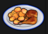
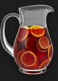

Items – Mindestbestand
Übersicht über den Mindestbestand an Items, den ein 18th Bloc Member üblicherweise mitführt.
Pflicht – Mindestbestand
10×
Patchkits
(Medkits)
10×
Streetkits
(Reparaturkits)
1×
Seil
1×

Strap
(Pistole)
1×

Basi
(oder Taschenlampe)
Optional – je nach Situation

Essen

Trinken

Baseballschläger

Schwere Pistole
Ausnahmen
- Wenn ihr auf Sammelfeldern steht
- Wenn ihr als Zivilist (Zivi) unterwegs seid
- Eigene Einschätzung, ob der Basi mitgeführt wird